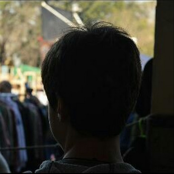

SOBRE MÍ
Juan Pedro 'MOSAS' Llamosas
Juan Pedro Llamosas - Informática General - 2023 TM
¡Hola! Soy Juan Pedro.
Un joven artista apasionado por la música electrónica.
En 2019, se me reveló mi sueño, lo que me llevó a mi comienzo en el mundo del arte.
Descubrí mi creatividad estando en la secundaria en el Instituto Dr. Juan Segundo Fernández (IJSF).
Al terminar la secundaria, quería hacer algo con mi creatividad, así que decidí comenzar mi viaje artístico formándome en las artes multimediales en la UNA.
Las artes multimediales implican experimentar con sonidos, texturas e imágenes junto con las nuevas tecnologías aplicadas a la producción artística, como la creación de instalaciones interactivas, performance multimedia, arte electrónico, etc. Desde 2022, he comenzado a descubrirme en mis prácticas artísticas, siguiendo mis creencias e ideales. Durante ese año me pregunté: “¿Cómo puedo hacer arte si no sé dibujar?”. El artista multimedial no necesita saber dibujar bien, sino crear obras combinando lo sonoro y lo visual para un fin artístico. Recuerdo que en clase me impactaron las obras de otros estudiantes, y pude decirme a mí mismo: ¡PUEDO HACER ESTO!

Una frase personal que mantengo en mi mente es "Tu mochila es mi mochila", porque creo que lo que cargan los demás y sus problemas, también son míos.
Me gusta ayudar en todo lo que puedo y siempre poner una sonrisa.
Me considero una persona creativa, ordenada y persistente.
Me gusta escuchar música, jugar a videojuegos y ver las competencias que estos traen.
Durante mi tiempo libre, disfruto pasar tiempo con mi familia y amigos, y tirar visuales como forma de práctica artística.
En 2024, recordé mi sueño y mi motivación por él volvió.
Quiero hacer que cada día sea un día más cercano a mi sueño.
Pensé: “No planeo dejar las artes multimediales, pero si pudiera ser quién quiero ser, convertirme en quién realmente quiero ser, no lo dudaría ni un segundo”.
Ahora tengo mi nombre artístico. Soy MOSAS.
- |Técnico electromecánico|
- |Estudiante Artes Multimediales|
- |Creador de contenido|
- |Editor de videos|
- |VJ|